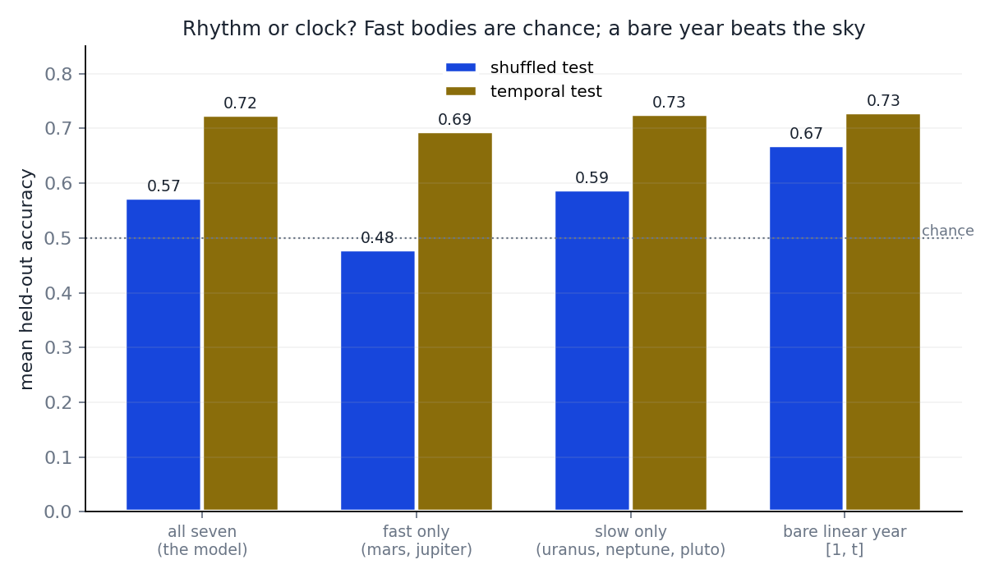

artatopics
Forecasting 251 research fields from planetary positions only. Every test: fit on data ≤1995, graded on 1996–2025 the model never saw, against do-nothing baselines. Scores: 1.0 = perfect, 0 = no better than the field's long-run average. Full code and data: github.com/ArtaQuest/artatopics.
1 · Per-field 30-year forecast
model · 30 yr
0.80
9 parameters per field
"no change" · 30 yr
0.73
carry today forward
model · 12 yr
0.93
model · 4 yr
0.97
2 · The share of attention across all fields at once
| strategy | error ↓ |
|---|---|
| copy yesterday's distribution | 0.083 |
| per-field model, renormalised | 0.085 |
| best combined planet model | 0.088 |
| softmax (convex, provably optimal) | 0.110 |
Copying yesterday wins. Fields drift one way (AI grows, old fields shrink); periodic signals cannot encode drift. Verified not to be a training issue: loss, model form, phase count and topic roster all varied — ranking unchanged.
3 · "Will it trend next year?" — one predictor per field, trained by least squares, called at the field's median
unseen data
57%
balanced · coin flip = 50%
fields above chance
68%
173 of 251
latest-years test
72%
Controls: fast planets only → 48% (chance). Slow planets only → 59%. Calendar year alone → 67%, better than the sky. The accuracy is calendar signal carried by the slow planets, not planetary rhythm.

Per-field calls
| field | call | accuracy |
|---|---|---|
| Health Informatics | yes | 86% |
| Biomaterials | yes | 85% |
| Structural Biology | yes | 80% |
| Pollution | yes | 79% |
| Orthodontics | yes | 79% |
| Experimental and Cognitive Psychology | yes | 78% |
| Cultural Studies | yes | 78% |
| General Decision Sciences | yes | 78% |
| Software | yes | 75% |
| Algebra and Number Theory | yes | 75% |
| Human Factors and Ergonomics | yes | 75% |
| Pathology and Forensic Medicine | yes | 74% |
| Reproductive Medicine | yes | 74% |
| Clinical Psychology | yes | 74% |
| Geography, Planning and Development | yes | 74% |
| Immunology | yes | 74% |
| Otorhinolaryngology | yes | 74% |
| Information Systems | yes | 73% |
| Biological Psychiatry | yes | 73% |
| General Social Sciences | yes | 73% |
| Management Information Systems | yes | 72% |
| Media Technology | yes | 72% |
| Computational Mechanics | yes | 71% |
| Inorganic Chemistry | yes | 70% |
| Mechanics of Materials | yes | 70% |
| Electronic, Optical and Magnetic Materials | yes | 70% |
| Mathematical Physics | yes | 70% |
| Rehabilitation | yes | 70% |
| Accounting | yes | 70% |
| Spectroscopy | yes | 70% |
| Geometry and Topology | yes | 70% |
| Atomic and Molecular Physics, and Optics | yes | 70% |
| Sensory Systems | yes | 69% |
| Catalysis | yes | 68% |
| Environmental Engineering | yes | 68% |
| Water Science and Technology | yes | 68% |
| Genetics (Medicine) | yes | 68% |
| Computational Theory and Mathematics | yes | 68% |
| Obstetrics and Gynecology | yes | 68% |
| Ecology | yes | 68% |
| Industrial and Manufacturing Engineering (Environmental Science) | yes | 67% |
| Biochemistry (Medicine) | yes | 67% |
| Hematology | yes | 67% |
| Developmental Neuroscience | yes | 67% |
| Law | yes | 65% |
| Computer Vision and Pattern Recognition | yes | 65% |
| Mechanical Engineering | yes | 65% |
| Pediatrics, Perinatology and Child Health | yes | 65% |
| Psychiatry and Mental health | yes | 65% |
| Neurology (Neuroscience) | yes | 65% |
| Statistical and Nonlinear Physics | yes | 65% |
| Speech and Hearing | yes | 65% |
| Animal Science and Zoology | yes | 65% |
| Statistics, Probability and Uncertainty | yes | 65% |
| Nephrology | yes | 65% |
| Cellular and Molecular Neuroscience | yes | 65% |
| Nutrition and Dietetics | yes | 65% |
| Developmental and Educational Psychology | yes | 65% |
| Small Animals | yes | 65% |
| Microbiology (Medicine) | yes | 64% |
| Religious studies | yes | 64% |
| General Health Professions | yes | 64% |
| Organizational Behavior and Human Resource Management | yes | 64% |
| Atmospheric Science | yes | 64% |
| General Economics, Econometrics and Finance | yes | 64% |
| Ophthalmology | yes | 64% |
| Behavioral Neuroscience | yes | 64% |
| Pharmacy | yes | 64% |
| Soil Science | yes | 63% |
| Astronomy and Astrophysics | yes | 63% |
| History | yes | 62% |
| Molecular Biology | yes | 62% |
| Neuropsychology and Physiological Psychology | yes | 62% |
| Pharmacology (Medicine) | yes | 62% |
| Information Systems and Management | yes | 61% |
| Automotive Engineering | yes | 61% |
| Polymers and Plastics | yes | 61% |
| Numerical Analysis | yes | 61% |
| Orthopedics and Sports Medicine | yes | 61% |
| Public Administration | yes | 61% |
| General Arts and Humanities | yes | 61% |
| Strategy and Management | yes | 61% |
| Dermatology | yes | 61% |
| Physiology (Medicine) | yes | 61% |
| Pulmonary and Respiratory Medicine | yes | 61% |
| Radiology, Nuclear Medicine and Imaging | yes | 61% |
| Education | yes | 61% |
| Ecology, Evolution, Behavior and Systematics | yes | 60% |
| Biotechnology | yes | 60% |
| Clinical Biochemistry | yes | 60% |
| Process Chemistry and Technology | yes | 60% |
| Electrochemistry | yes | 60% |
| Industrial and Manufacturing Engineering (Engineering) | yes | 60% |
| Architecture | yes | 60% |
| Virology | yes | 60% |
| Ceramics and Composites | yes | 60% |
| Metals and Alloys | yes | 60% |
| Family Practice | yes | 60% |
| Oral Surgery | yes | 60% |
| Philosophy | yes | 59% |
| Economics and Econometrics | yes | 59% |
| Management of Technology and Innovation | yes | 59% |
| Endocrinology, Diabetes and Metabolism | yes | 59% |
| Rheumatology | yes | 59% |
| Transportation | yes | 59% |
| Demography | yes | 59% |
| Surfaces, Coatings and Films | yes | 59% |
| Internal Medicine | yes | 59% |
| Aging | yes | 58% |
| Geology | yes | 58% |
| Pharmaceutical Science | yes | 58% |
| Radiation | yes | 58% |
| Communication | yes | 58% |
| Complementary and Manual Therapy | yes | 58% |
| Occupational Therapy | yes | 58% |
| Biochemistry (Biochemistry, Genetics and Molecular Biology) | yes | 57% |
| Cell Biology | yes | 57% |
| Applied Microbiology and Biotechnology | yes | 57% |
| Materials Chemistry | yes | 57% |
| Applied Psychology | yes | 57% |
| Music | yes | 57% |
| Artificial Intelligence | yes | 57% |
| Finance | yes | 57% |
| Global and Planetary Change | yes | 57% |
| Epidemiology | yes | 57% |
| Health | yes | 57% |
| Tourism, Leisure and Hospitality Management | yes | 56% |
| Signal Processing | yes | 56% |
| General Energy | yes | 56% |
| Instrumentation | yes | 56% |
| Gastroenterology | yes | 56% |
| Urology | yes | 55% |
| Emergency Medical Services | yes | 55% |
| Conservation | yes | 55% |
| Hardware and Architecture | yes | 55% |
| Gender Studies | yes | 55% |
| Urban Studies | yes | 55% |
| Social Psychology | yes | 54% |
| Horticulture | yes | 54% |
| Museology | yes | 54% |
| Discrete Mathematics and Combinatorics | yes | 53% |
| Agronomy and Crop Science | yes | 53% |
| Management Science and Operations Research | yes | 53% |
| Periodontics | yes | 53% |
| Marketing | yes | 52% |
| Paleontology | yes | 52% |
| Oncology | yes | 52% |
| Physical Therapy, Sports Therapy and Rehabilitation | yes | 52% |
| Food Science | yes | 52% |
| Ocean Engineering | yes | 52% |
| Emergency Medicine | yes | 52% |
| Neurology (Medicine) | yes | 52% |
| Nature and Landscape Conservation | yes | 52% |
| General Agricultural and Biological Sciences | yes | 50% |
| Forestry | yes | 50% |
| Classics | yes | 50% |
| Literature and Literary Theory | yes | 50% |
| Endocrinology | yes | 50% |
| Genetics (Biochemistry, Genetics and Molecular Biology) | yes | 50% |
| Industrial relations | yes | 50% |
| Bioengineering | yes | 50% |
| Filtration and Separation | yes | 50% |
| Fluid Flow and Transfer Processes | yes | 50% |
| Computer Science Applications | yes | 50% |
| Space and Planetary Science | yes | 50% |
| Safety, Risk, Reliability and Quality | yes | 50% |
| Building and Construction | yes | 50% |
| Theoretical Computer Science | yes | 50% |
| Critical Care and Intensive Care Medicine | yes | 50% |
| Geriatrics and Gerontology | yes | 50% |
| Hepatology | yes | 50% |
| Surgery | yes | 50% |
| Leadership and Management | yes | 50% |
| Research and Theory | yes | 50% |
| Pharmacology (Pharmacology, Toxicology and Pharmaceutics) | yes | 50% |
| Linguistics and Language | yes | 50% |
| Safety Research | yes | 50% |
| Anthropology | yes | 50% |
| Biomedical Engineering | yes | 48% |
| Civil and Structural Engineering | yes | 48% |
| Infectious Diseases | yes | 48% |
| Archeology (Social Sciences) | yes | 48% |
| Computer Networks and Communications | yes | 48% |
| Renewable Energy, Sustainability and the Environment | yes | 48% |
| Health, Toxicology and Mutagenesis | yes | 48% |
| Microbiology (Immunology and Microbiology) | yes | 48% |
| Complementary and alternative medicine | yes | 48% |
| Applied Mathematics | yes | 47% |
| Anesthesiology and Pain Medicine | yes | 47% |
| Equine | yes | 47% |
| Health Information Management | yes | 47% |
| Political Science and International Relations | yes | 47% |
| Physiology (Biochemistry, Genetics and Molecular Biology) | yes | 47% |
| Cognitive Neuroscience | yes | 45% |
| Plant Science | yes | 45% |
| Earth-Surface Processes | yes | 45% |
| Geochemistry and Petrology | yes | 45% |
| Control and Systems Engineering | yes | 45% |
| Parasitology | yes | 45% |
| Cardiology and Cardiovascular Medicine | yes | 45% |
| Developmental Biology | yes | 44% |
| Public Health, Environmental and Occupational Health | yes | 44% |
| Chemical Health and Safety | yes | 44% |
| Radiological and Ultrasound Technology | yes | 44% |
| Language and Linguistics | yes | 42% |
| Management, Monitoring, Policy and Law | yes | 42% |
| Sociology and Political Science | yes | 41% |
| Aquatic Science | yes | 40% |
| Human-Computer Interaction | yes | 40% |
| Energy Engineering and Power Technology | yes | 40% |
| Life-span and Life-course Studies | yes | 38% |
| Visual Arts and Performing Arts | yes | 38% |
| Business and International Management | yes | 36% |
| Archeology (Arts and Humanities) | yes | 35% |
| Toxicology | yes | 35% |
| Analytical Chemistry | yes | 35% |
| History and Philosophy of Science | yes | 34% |
| Insect Science | yes | 33% |
| Computational Mathematics | yes | 33% |
| Medical Laboratory Technology | yes | 31% |
| Statistics and Probability | yes | 26% |
| Molecular Medicine | yes | 25% |
| Electrical and Electronic Engineering | yes | 24% |
| Transplantation | yes | 23% |
| Acoustics and Ultrasonics | no | 100% |
| Biophysics | no | 80% |
| Aerospace Engineering | no | 74% |
| Modeling and Simulation | no | 69% |
| Computer Graphics and Computer-Aided Design | no | 67% |
| Nuclear Energy and Engineering | no | 67% |
| Development | no | 67% |
| General Psychology | no | 65% |
| General Dentistry | no | 64% |
| Ecological Modeling | no | 63% |
| Immunology and Allergy | no | 63% |
| Oceanography | no | 61% |
| Cancer Research | no | 60% |
| Issues, ethics and legal aspects | no | 60% |
| Geophysics | no | 59% |
| General Engineering | no | 57% |
| Environmental Chemistry | no | 55% |
| Nuclear and High Energy Physics | no | 53% |
| Library and Information Sciences | no | 53% |
| Medical Terminology | no | 53% |
| Endocrine and Autonomic Systems | no | 50% |
| Physical and Theoretical Chemistry | no | 48% |
| Anatomy | no | 48% |
| Organic Chemistry | no | 45% |
| Fuel Technology | no | 44% |
| Condensed Matter Physics | no | 38% |
| General Materials Science | no | 30% |